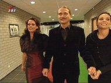

|
Huwelijk Ron en Denise Johr |
SBS6 heeft een serie "Mijn mooiste dag" waarin bevriende stellen
elkaars bruiloft organiseren. In de
aflevering van 2 april trouwden de Rodasupporters Ron en Denise Johr. Ron had
als grootste angst
dat het huwelijk in het Fortuna-stadion zou worden voltrokken. Denise had
nachtmerries bij het idee
dat Rons haren zouden worden gekortwiekt.
Ron (ex-bestuur FP, nu Z16). Denise (Z16).
Traantjes, zo mooi vind ze de jurk.
De grote dag is aangebroken
Met een Hummer naar Kirchroa voor de officiële huwelijksvoltrekking.

Glaasje prik na het ja-woord.
Poseren voor het heiligdom. Op
de tonen van INSOMNIA.....
...het stadion binnen waar voor een alternatief gastenvak Eric vd
Luer het huwelijk nogmaals voltrok.
Met de Roda heteluchtballon verlaat het paar het PLS.
Ron: "Dit is mijn thuishaven!"
Na eerst een boom geraakt te hebben volgt er een zachte landing
en wordt het feest voortgezet in een
grot. Ron en Denise, proficiat en veel geluk!
© Koempels Pleasure Dome